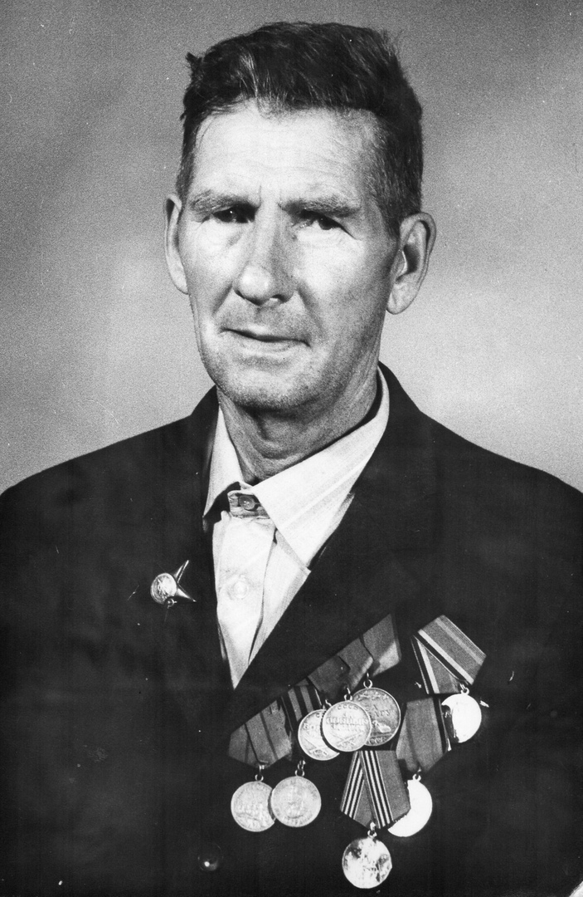

Попов Алексей Фролович
Родился в 1922 году в д.Селиваново Трофимовского сельсовета. Начал войну на Калининском фронте в 1941 году. С 274-м полком 24-й Железной Самаро-Бердичевской стрелковой дивизии он прошёл от Сталинграда до Чехословакии. За храбрость и мужество получил 10 благодарностей от Верховного Главнокомандующего. Награждён орденом Красной Звезды, медалью «За отвагу», двумя медалями «За боевые заслуги», «За оборону Сталинграда», «За победу над Германией в Великой Отечественной войне1941-1945гг.». Участник Парада Победы на Красной Площади 24 июня 1945 года.